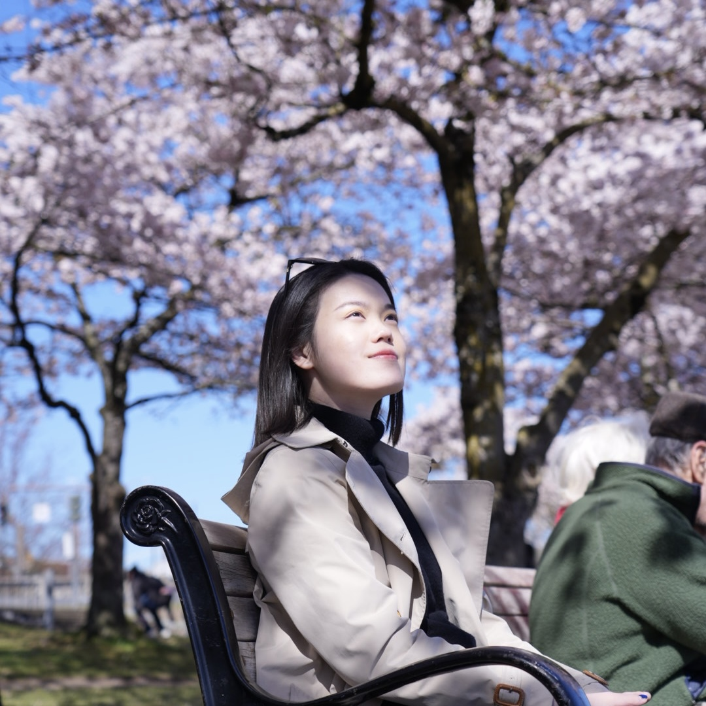

PhD Researcher & Strategist
Welcome to my website! I am Wenqi, a first-year PhD student at the University of Washington. I translate cutting-edge biomedical research into scalable solutions — from 3D bioprinting systems to market strategy.
I am a College of Engineering Fellow and Ron and Wanda Crockett Endowed Fellow at the University of Washington, where my PhD research focuses on building 3D stem cell systems for studying tissue regeneration microenvironments.
My background spans the full arc from wet lab science and hardware fabrication to business strategy and consulting. I believe the most impactful innovations emerge at the intersection of rigorous science and clear-eyed market thinking.
As Entrepreneurship Lead for iGEM Rochester, I moved a Gold Medal-winning dual-channel 3D bioprinting system from the bench to a complete business plan — conducting customer discovery, mapping biomanufacturing bottlenecks, and presenting at the Grand Jamboree in Paris, outcompeting 400+ global teams.
My work spans biomedical engineering, synthetic biology, finite element analysis, and entrepreneurship. Selected projects across my research career.
Open to research collaborations, entrepreneurship conversations, and connecting with scientists and founders working at the frontier of deep tech.